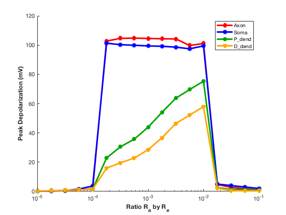

This is the readme for the model associated with figure 15 from the paper:
Appukuttan S, Brain KL, Manchanda R (2017) Modeling extracellular fields for a three-dimensional network of cells using NEURON. J Neurosci Methods 290:27-38
http://dx.doi.org/10.1016/j.jneumeth.2017.07.005
This model was contributed by S Appukuttan. It is written in the NEURON simulator which is freely available from
http://neuron.yale.edu
If you need more help than given below in running the simulation please consult this page:
https://senselab.med.yale.edu/ModelDB/NEURON_DwnldGuide.cshtml
Usage:
------
Auto-launch from modeldb (if NEURON installed and the browser is configured) or download and extract the archive and start with a command like
nrngui init.hoc
on unix/linux, or start the init.hoc file on mswin or mac os x.
Click the RunAll button. After a minute the simulation completes
and a figure similar to figure 15 in the paper is displayed:
 Also a file called PeakDepol.dat will be created which you can graph with your favorite graphing program. For example in matlab you can type an instruction on the unix command line that will make a file without the header information:
tail -17 PeakDepol.dat >a.dat
And then start matlab and type a few lines to create graph like figure 15 in the paper:
load a.dat
Also a file called PeakDepol.dat will be created which you can graph with your favorite graphing program. For example in matlab you can type an instruction on the unix command line that will make a file without the header information:
tail -17 PeakDepol.dat >a.dat
And then start matlab and type a few lines to create graph like figure 15 in the paper:
load a.dat
figure
for i=2:6
semilogx(a(:,1),a(:,i))
hold on
end
The graph generated should look like this:
